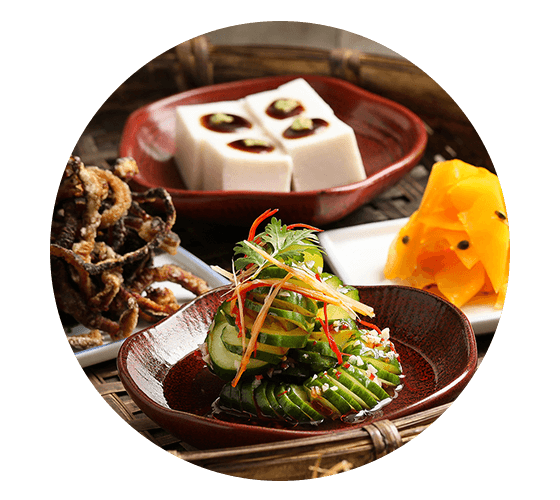
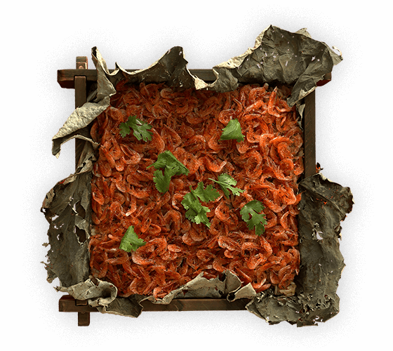
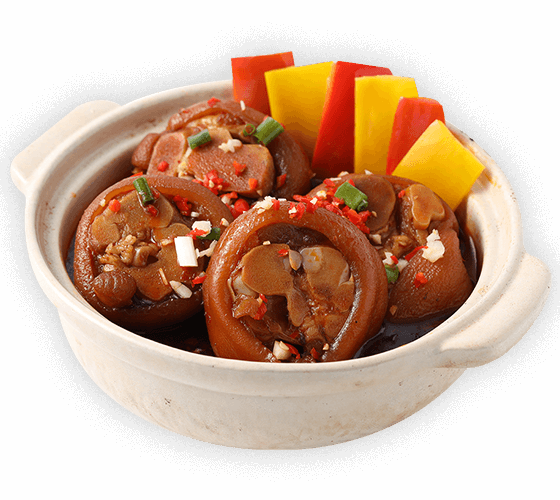
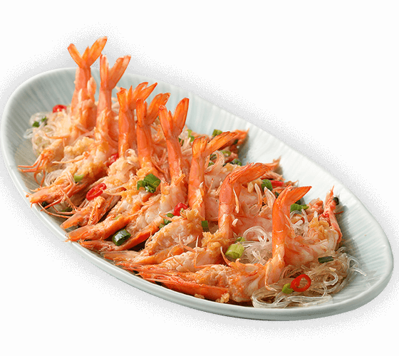
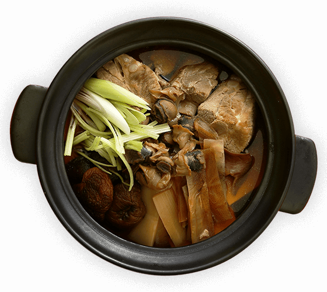

活動緣由
愛護土地、善用大地孕育而生的農作物，懷抱誠摯的心意，將道道食材烹煮成美味料理，
照顧不完美的農作物，珍惜食材不浪費。
我們把這份心意投入到最具人情味的「辦桌」文化。
小時候每逢左鄰右舍、親朋好友婚嫁喜慶時，總有享用辦桌菜的好口福。
記憶中那股鹹香美味的香氣，至今仍難以忘懷。
丰禾日麗為了找尋那份美好，用心重現經典，邀您跟我們憶起回味辦桌時光。
活動方式
每週四晚上，搶先享用隱藏版辦桌菜，
現場不僅有總鋪師來說菜講古、餐後還有古早味戳戳樂活動，
人人有獎，有吃也有拿，為您盛上最豐厚的懷舊滋味。
-
預訂期間
2019/07/01(一)-08/01(四)
-
預訂方式
最晚請於一週前電話(02-2507-6808)或現場預訂，預訂時以「桌」為單位，每桌最多8位，
須繳訂金1,000元(親至門店或轉帳匯款)，餐費5,600元(含服務費)，每晚桌次有限，訂完為止。 -
開席日期
2019/07/11、07/18、07/25、08/01、08/08每週四晚上
-
開席時間
活動當天18:30報到，19:00準時開席，澎湃上菜
-
活動地點
丰禾日麗台北南京東店(台北市中山區南京東路二段146號2樓)
菜色故事
辦桌宴客的菜色中，總有幾道必出經典菜，為什麼要出這些菜色呢？背後都有其典故：
-

四喜
拼盤即為四(賜)喜臨門之意，古云人生四大喜事：
久旱逢甘雨、他鄉遇故知、洞房花燭夜、金榜題名時。
而今已不侷限於這四大，表示多項喜事同時到來。 -

櫻花蝦
米糕經典辦桌菜。米糕象徵節節高升，有祝賀之意；
搭配東港櫻花蝦不僅兼具美味與香氣，大紅色澤也十分討喜。
不論是宴客活動、過年圍爐都少不了這道料理。 -

古早味
滷豬腳逢年過節餐桌上總少不了軟嫩入味的豬腳，
不但能改運、搭配麵線更有添壽的意義。
嚴選豬後腳川燙加入小封滷汁，滷至軟透，
擺上蒜苗、辣椒、香菜即可美味上桌。 -

蒜蓉
蒸大蝦在早期不富裕的年代，很難得吃到蝦子，
就連捕蝦人家都因為要拿去賣錢養家而不易吃到，
蝦子被視為是富貴的象徵。
本回運用大草蝦，呈現經典辦桌菜料理。 -

魷魚
螺肉蒜源自北投一帶酒家菜。當時許多生意人會在酒家談生意，但經常一晚都要跑兩三攤，到酒家時早已吃飽，為了賺這群老闆的錢，因而有了這道鹹香下酒的魷魚螺肉蒜。